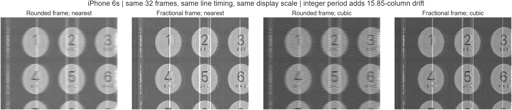
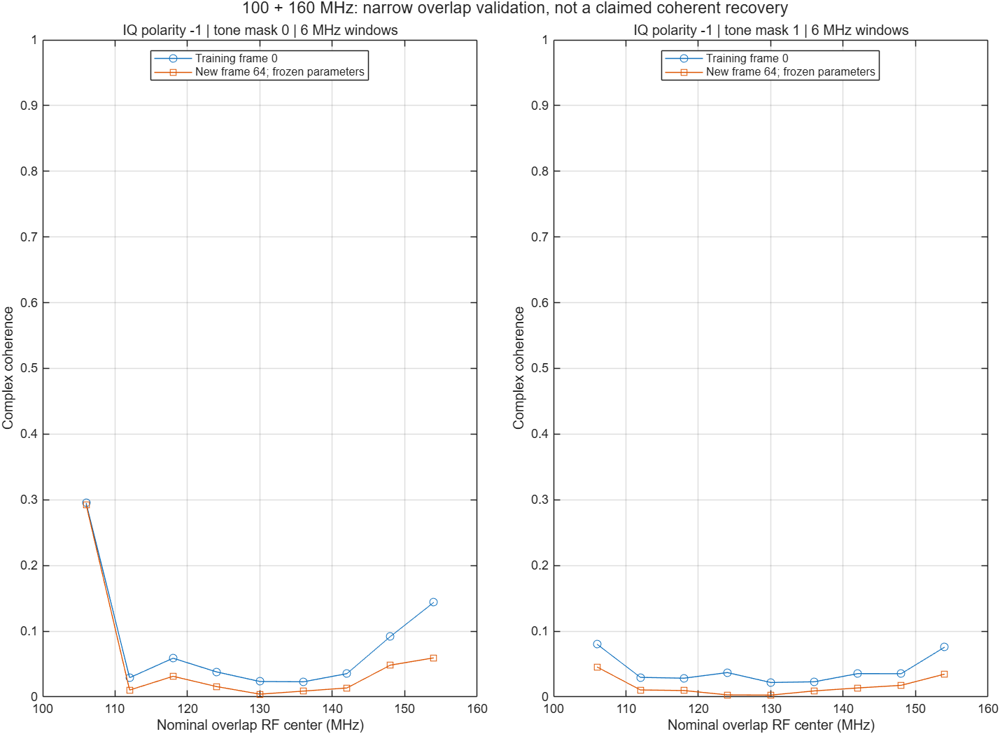
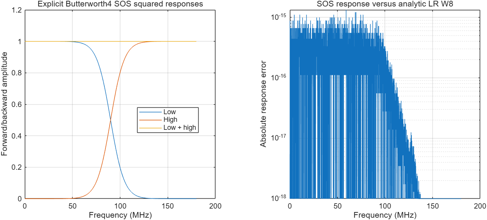
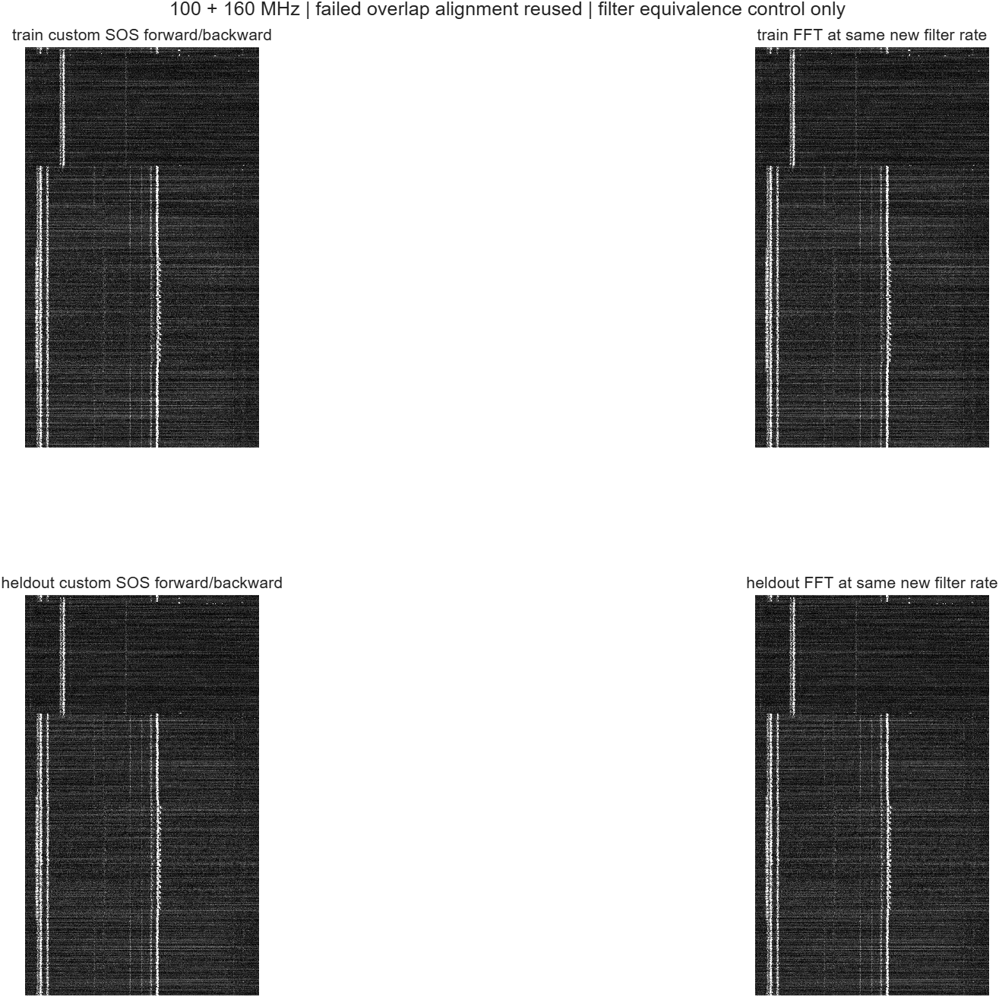
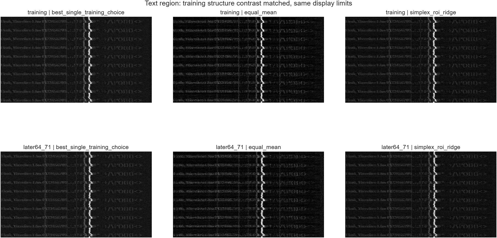
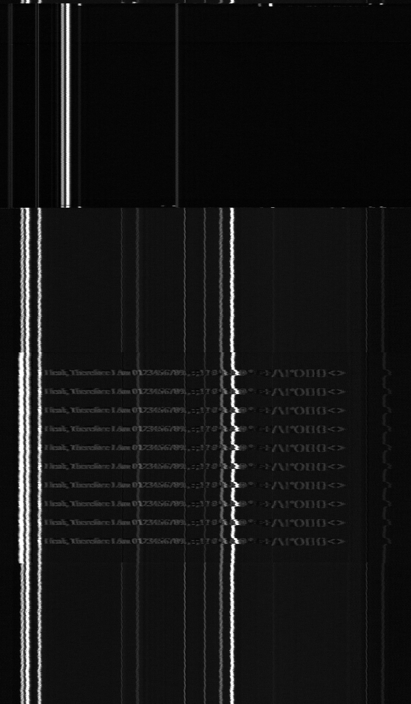

MATLAB 실행 결과 · 2026-10-24 · 사용자 제공 iPhone 6 probe sweepStitching의 구현과 복원 결과를 구분해서 검증
실제 LR IIR, 좁은 overlap, 주파수·위상 보정, 영상 결합, iPhone 6s fractional 주기의 통제 실험
확인된 것과 남은 것
정밀한 frame period는 6s의 누적 위치 오차를 줄인다. 실제 IIR와 동일 설계 FFT 응답은 일치한다. iPhone 6에서는 112.8025 kHz 반복 간격과 대역 간 RF 이동 오차가 확인됐다.
100+160 MHz와 전체 sweep의 coherent 문자 복원 성공은 아직 확인하지 못했다. 강한 반복 성분의 위상 개선을 화면 payload 복원으로 해석하지 않는다.
1. iPhone 6s: 정밀 frame period의 직접 효과
같은32프레임, 같은 line period, 같은 crop·표시 범위. 정수 frame period는 마지막 프레임에15.85 출력 열의 이동을 만든다. Fractional period를 유지한 nearest도 작은 문자를 보존한다.

왼쪽부터 정수/nearest, fractional/nearest, 정수/cubic, fractional/cubic. 모두 실측 IQ의 AM 평균. 기존 per-frame 잔여 보정은 적용하지 않은 비교다.| 항목 | 값 |
|---|
| Frame period | 917636.666798 samples → 반올림917637 |
| 31 frame 간격의 누적 오차 | 10.329262 input samples =15.846168 output columns |
| Line period / Fs | 488.884547974 samples /55.054870 MS/s |
상관도는 흐려진 영상에서도 증가할 수 있다. 이를 원본 정확도나 SNR이라고 부르지 않았다.
6개 조건의 수치
2. 100+160 MHz: 위상은 일부 개선됐지만 payload 정렬은 미확인
공통 대역을6 MHz씩 나눴다. Training frame0에서 지연·위상을 추정하고, frame64에서 고정값을 평가했다. 주파수 이동 보정은 처음2^22 samples의 공통 RF 피크30쌍으로 계산했다.
| 106 MHz 창 | 후속 coherence | 잔여 위상 |
|---|
| 명목 이동, 전체 frame 시각 반영 | 0.292516 | 1.189636 rad |
| 훈련 피크 기반 이동 보정 | 0.292619 | 0.210769 rad |
| 강한10피크 주변 제거 후 | 0.045630 | 0.256964 rad |

학습과 평가 모두 coherence가 낮거나 강한 피크에 의존한다. 그래프의 높이는 screen fidelity가 아니다.11대역의 반복 피크 간격: training112802.507 Hz, 후속112802.609 Hz. I−jQ RF 좌표에서 대역 간 공통 피크201쌍, I+jQ에서는8쌍. Byte clock과 실제 lane rate는 아직 식별하지 못했다.
3 data lane은 공개 N61 회로도에 근거한 우선 가설이다. RGB888에서 3 lane 배치 주기는8 UI,4 lane은24 UI. 실제 비트 값의 반복과 배치 반복은 다르다.
RF 주기·alias 상세
3. Linkwitz–Riley: 실제 IIR도 실행
기존 코드는 W8 정상상태 응답의 FFT 가중치였다. 이번에는 Butterworth4의 두 SOS를 정방향·역방향으로 실제 계산했다. MATLAB filtfilt 자체를 호출한 것은 아니다.

실제100+160 MHz pair에서 새 설계와 동일한 Fs의 FFT 결과 간 상대 RMS는 약8.8×10⁻¹⁶. 기존 정렬값이 검증에 실패했기 때문에 아래 화면은 필터 구현 비교다.
실제 pair IIR/FFT의 training·후속 화면

실제 합성률503.060285 MS/s에 맞춰 SOS를 재설계했다. 이전359.998288 MS/s 설계 응답과의 차이도 기록했다.
Chapter5의 m[i]는 미적용: 실제 DSI active/blank/HS 위치가 확인되지 않았다. EM Eye의 raw IQ m[n]와 다른 기호다.
4. EM Eye 방식의 이미지 결합
100·340·520 MHz의 AM 영상에서 training만으로 정합·극성·가중치를 정했다. 제약 결합은[0.8,0,0.2]를 선택했다. 원본 screenshot pixels나 neural network를 합성에 쓰지 않았다.

위:training, 아래:후속64–71. 왼쪽:100 MHz, 가운데:동일 가중 평균, 오른쪽:제약 결합. Training 문자-gradient 대비를 기준으로 gain을 고정했다.| 동일 구조 대비의 후속 영상 | 배경 ROI 표준편차 |
|---|
| 100 MHz | 0.491594 |
| 동일 가중 평균 | 0.620484 |
| 제약 결합 | 0.491087 |
개선은 약0.10%에 불과하다. 단순 대비 감소를 제거하면 유의미한 복원도 향상이 확인되지 않는다. 다른 대역의 낮은 내용 정합도가 주요 제한이다.
5. iPhone 6 원본과 기존100 MHz AM 평균화 과정
아래 복원은2026-10-23에 완료된 refinement 결과다. 이번 stitching 성공 화면이 아니다. N64와 이번 N8 fusion은 평균 수·처리 조건이 달라 직접적인 성능 순위를 매기지 않는다.
 사용자 원본 screenshot. 해상도750×1334.
사용자 원본 screenshot. 해상도750×1334.
부분적인 문자 구조가 보이는 실측 복원. 분석 raster1100×1881은 물리 panel timing 확정값이 아니다.6. TF 분석과 다음 검증 조건
선택 대역의 DDC·antialias 축소 → 분리된 성분의 ridge/phase 추적 → CFO 보정 → 별도 HS/row event 시각으로 time warp 추정 → 복소 fractional resampling 순서가 적절하다. RF ridge의 이동 하나로 sample-clock 오차를 단정하지 않는다.
현재 연결 MATLAB에는 Signal Processing/Wavelet Toolbox가 없어 fsst/wsst는 실행하지 못했다. 이번 결과는 실제 base MATLAB FFT·filter·IQ 분석이다.
전체 보고서 · EM Eye 원문 감사 · DSI lane·byte·packet 후보